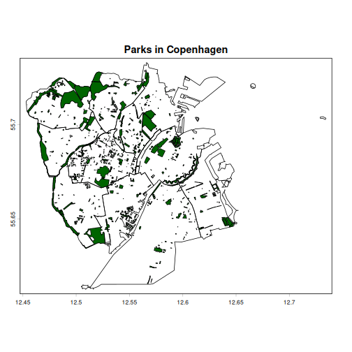
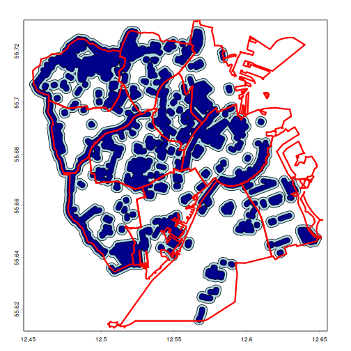
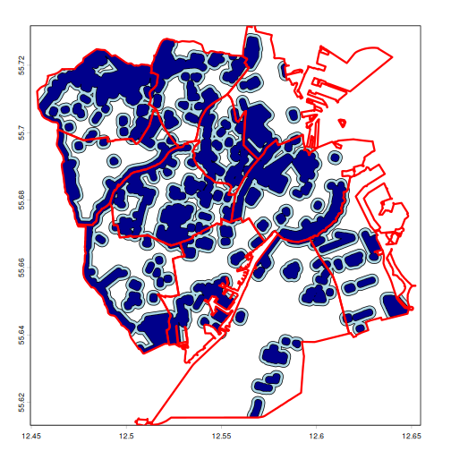
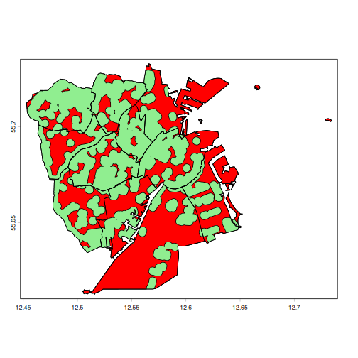
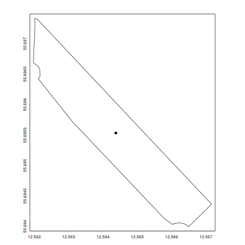

Spatial Vector Data
Last updated on 2026-08-03 | Edit this page
Estimated time: 84 minutes
Overview
Questions
- FIXME
Objectives
- FIXME
Introduction
Let’s start by getting our hands on some spatial vector data.
From the website we can download two vector files with the
.gpkg extension (signifying it is in the format
geopackage). The first represent the neighbourhoods of Copenhagen and
the municipality of Frederiksberg, the second parks in these two
municipalities:
The first is extracted from the databank of Copenhagen, augmented
with the borders of Frederiksberg extracted from OpenStreetMaps using
the osmdata package.
The second is also extracted from OpenStreetMaps.
Rather than downloading them manually, we can run the following
script to download them directly to our data folder:
R
urls <- c("https://raw.githubusercontent.com/KUBDatalab/R-toolbox/main/episodes/data/cph_neighborhoods_and_frederiksberg.gpkg",
"https://raw.githubusercontent.com/KUBDatalab/R-toolbox/main/episodes/data/parks_cph_frederiksberg.gpkg"
download.file(
urls,
destfile = file.path("data", basename(urls)),
mode = "wb"
)We are going to learn manipulating spatial vector data by analysing the accessibility of parks in the urban environment.
Read and inspect data
Working with raster data, we used the raster function
from the terra package. Now we are working with vector
data, and use the vec function:
R
library(terra)
neighborhoods <- vect("data/cph_neighborhoods_and_frederiksberg.gpkg")
parks <- vect("data/parks_cph_frederiksberg.gpkg")
If we are not 100% sure of the quality of the data we have
downloaded, it is best practice to check that the geometries are valid.
The function is.valid checks this, and will return TRUE or
FALSE for each object within the data. As the parks dataset
contains 1014 parks, it will be difficult to identify if one of them is
invalid. The all function returns TRUE if all values are
TRUE:
We can inspect the data by simply calling the name:
R
neighborhoods
OUTPUT
class : SpatVector
geometry : polygons
dimensions : 11, 2 (geometries, attributes)
extent : 12.45305, 12.73425, 55.61284, 55.73271 (xmin, xmax, ymin, ymax)
source : cph_neighborhoods_and_frederiksberg.gpkg (områder)
coord. ref. : lon/lat WGS 84 (EPSG:4326)
names : name population
type : <chr> <num>
values : Indre By 58224
Nørrebro 79779
Vanløse 40847
...And we can get a closer look at the name attribute using
the $ notation, which returns a character vector with the
names of the polygons:
R
neighborhoods$name
OUTPUT
[1] "Indre By" "Nørrebro"
[3] "Vanløse" "Brønshøj-Husum"
[5] "Bispebjerg" "Amager Øst"
[7] "Amager Vest" "Vesterbro-Kongens Enghave"
[9] "Valby" "Østerbro"
[11] "Frederiksberg" What about the names of the parks?
Use the same technique to extract the names of the parks.
To save space this code only return the first 10 names:
R
parks$name |> head(n = 10)
OUTPUT
[1] "Ørstedsparken" "Botanisk Have" "Hørsholmparken"
[4] "Nørrebroparken" "Filipsparken" "Fredens Park"
[7] "Amorparken" NA "Mindelunden"
[10] "Jensen Klints Plads"From this we learn that a lot of what OpenStreetMaps considers parks, do not have a name. For serious work we would probably have to apply some sort of selection to this dataset.
Not all parks have names. We can check for missing values using the
is.na() function on the name attribute.
Nesting that into the table() function, we can see how many
parks are nameless:
R
# Missing park name?
table(is.na(parks$name))
OUTPUT
FALSE TRUE
143 871 Most of what OSM considers parks in this area have no names.
Simple Plots
For simple visualizations, we use the plot() function.
We would like to have parks overlaid on the neighborhoods, and must use
the add = TRUE argument to do that. The first plot is
displayed as a base layer, and subsequent plots are added on top of
that:
R
plot(neighborhoods, main = "Parks in Copenhagen")
plot(parks, add = TRUE, col = "darkgreen")

Polygon Statistics
Both neighborhoods and parks are polygons with an area and a perimeter.
The information is not stored directly in the data, but can be
calculated from the data using the expance() and
perim() functions from the terra package:
R
neighborhoods$area_m2 <- expanse(neighborhoods, unit = "m")
neighborhoods$perimeter_m <- perim(neighborhoods)
neighborhoods
OUTPUT
class : SpatVector
geometry : polygons
dimensions : 11, 4 (geometries, attributes)
extent : 12.45305, 12.73425, 55.61284, 55.73271 (xmin, xmax, ymin, ymax)
source : cph_neighborhoods_and_frederiksberg.gpkg (områder)
coord. ref. : lon/lat WGS 84 (EPSG:4326)
names : name population area_m2 perimeter_m
type : <chr> <num> <num> <num>
values : Indre By 58224 1.04671e+07 20448.2
Nørrebro 79779 4.10605e+06 9707.62
Vanløse 40847 6.69647e+06 13894.2
...Note that we do not have to provide a unit for the calculation of the perimeter; the only possible output is in meters.
Which neighborhood is the smallest?
Try to figure out which of the neighborhoods (and/or Frederiksberg) is the smallest.
We can extract values from the neighborhood object using the
values() function (just like we did with raster data).
After that, we can sort using the tidyverse functions. Remember to run
library(tidyverse)
An easier solution is to convert the spatial object to a data frame,
using either as.data.frame() or as_tibble()´.
The last option give a nicer looking output.
R
library(tidyverse)
neighborhoods |>
as_tibble() |>
arrange(area_m2) |>
slice(1)
OUTPUT
# A tibble: 1 × 4
name population area_m2 perimeter_m
<chr> <dbl> <dbl> <dbl>
1 Nørrebro 79779 4106045. 9708.Add a calculated area and perimeter to the parks
Repeat the calculations we did on the neighborhoods to add areas and perimeters to the parks.
R
parks$area_m2 <- expanse(parks, unit = "m")
parks$perimeter_m <- perim(parks)
R
parks
OUTPUT
class : SpatVector
geometry : polygons
dimensions : 1014, 5 (geometries, attributes)
extent : 12.45406, 12.64811, 55.61572, 55.72894 (xmin, xmax, ymin, ymax)
source : parks_cph_frederiksberg.gpkg (parks)
coord. ref. : lon/lat WGS 84 (EPSG:4326)
names : osm_id name dog area_m2 perimeter_m
type : <chr> <chr> <chr> <num> <num>
values : 3098756 Ørstedsparken NA 64378.8 1090.32
3098803 Botanisk Have NA 120140 1447.47
3099108 Hørsholmparken NA 15398.7 844.803
...To make further analysis easier, we exclude parks smaller than 2000
\(m^2\). We can treat the
park data as a data frame, and select rows based on a
logical comparison of parks$area_m2 with 2000:
R
parks_clean <- parks[parks$area_m2 > 2000, ]
Spatial Relationships
Which neighborhoods have the most parks?
The function relate() take two spatVector objects, and
return a logical matrix indicating if there is a relation between the
objects in the two spatial vectors. It can handle different relations
(see the list in the documentation running ?relate). Here
we ask if there is an intersection between the objects - more
intuitively: “is there an overlap”. That also means that some parks
might be located in more than one neighborhood
R
intersect_matrix <- relate(neighborhoods, parks_clean, relation = "intersects")
The result is a logical matrix. We can easily figure out how many parks are in each neighbourhood. Each row is one neighbourhood, each column is a park. And the cell that intersects a row and a column, is TRUE if the park is located (partially) in the neighbourhood. Adding the values in each row, tells us how many parks are in each neighbourhood:
R
rowSums(intersect_matrix)
OUTPUT
[1] 44 38 24 44 34 27 24 56 31 18 78We do not get the names, but the order of neighbourhoods in the
matrix is the same as the order of the names of the neighbourhoods in
our neighbourhoods data. That means we can augment the
result and get a nice table:
R
neighbourhood_stat <- data.frame(name = neighborhoods$name, count = rowSums(intersect_matrix))
neighbourhood_stat
OUTPUT
name count
1 Indre By 44
2 Nørrebro 38
3 Vanløse 24
4 Brønshøj-Husum 44
5 Bispebjerg 34
6 Amager Øst 27
7 Amager Vest 24
8 Vesterbro-Kongens Enghave 56
9 Valby 31
10 Østerbro 18
11 Frederiksberg 78But what are the names?
One problem with this approach is that some of the parks, even those larger than 2,000 square meters, do not have a name.
We can instead rely on the osm_id which uniquely identify the parks.
Adding those to the intersect_matrix allow us to know
which parks are in which neighbourhoods, and do further analysis on
e.g. total park area in different neighbourhoods. We can do that using
colnames() and rownames() as showwn below.
After that we can convert the matrix to a data frame. We recommend using
as_tibble() with the additional argument
rownames = "name:
R
colnames(intersect_matrix) <- parks_clean$osm_id
rownames(intersect_matrix) <- neighborhoods$name
intersect_matrix |> as_tibble(rownames = "name")
Availability Analysis
What is the availability of parks in Copenhagen? Or, which parts of the city lies within 300 meters of a park? And which lies within 1000 meters?
Challenge
How would we do that? Not - how should the code look like, but what would be the conceptual steps in doing that be? Discuss!
There are probably many ways of doing this. One suggestion would be:
- “Expand”, or add 300 (or 1000) meters to each polygon describing a park
- Merge any of these new polygons if they overlap
- Plot and colour the new polygons - overlaid on the map of the neighbourhoods
The new polygons we want to look at are the existing polygons - with an added “buffer” of 300 (and 1000) meters.
We create those new polygons using the buffer()
function:
R
buffer_100 <- buffer(parks_clean, width = 100)
buffer_200 <- buffer(parks_clean, width = 200)
Some parks and their buffers, overlap. We can “aggregate” them into
single polygons using the aggregate() function:
R
buffer_100 <- aggregate(buffer_100)
buffer_200 <- aggregate(buffer_200)
And now we can plot them:
R
plot(buffer_200, col = "lightblue")
plot(buffer_100, col = "darkblue", add = TRUE)
plot(neighborhoods, add = TRUE, lwd = 3, border = "red")

Plotting in this way places each new plot on top of the others, so the order is important!
Some of the buffered parks extends outside the city. We can cut the
off using the crop() function, specifying the borders of
the city. We begin by aggregating the neighbourhoods to a single border
polygon - just like we aggregated the buffer-zones:
R
borders <- aggregate(neighborhoods)
buffer_100 <- crop(buffer_100, borders)
buffer_200 <- crop(buffer_200, borders)
And now we can repeat the plot - without any bufferzones and parks extending outside the city.
R
plot(buffer_200, col = "lightblue")
plot(buffer_100, col = "darkblue", add = TRUE)
plot(neighborhoods, add = TRUE, lwd = 3, border = "red")

R
city_area <- expanse(neighborhoods) |> sum()
tribble(~distance, ~cov_area,
100, expanse(buffer_100),
200, expanse(buffer_200)) |>
mutate(pct_covered = cov_area/city_area*100
)
OUTPUT
# A tibble: 2 × 3
distance cov_area pct_covered
<dbl> <dbl> <dbl>
1 100 33806232. 33.3
2 200 54978732. 54.2We can also identify the areas where access to parks is more difficult (distances greater than 1,000 m). We can do this by subtracting two vector layers using the erase() function.
R
bad_access <- erase(aggregate(neighborhoods), buffer_200)
plot(neighborhoods, col = "lightgreen")
plot(bad_access, col = "red", add = TRUE)
plot(neighborhoods, add = TRUE)

Proximity Analysis
What is the closest park?
The University Library Datalab head quartes is located at X = 12.560613321547443 (longitude) and Y = 55.697361063532114 (latitude). These coordinates were found using Google Maps, which use the WGS 84 (EPSG:4326) coordinate system.
Before we can work with that, we need to construct a vector-object (SpatVector), with these coordinates, and reference system:
R
datalab <- cbind(12.560613321547443, 55.697361063532114)
datalab <- vect(datalab, crs = "EPSG:4326")
We can find the nearest park, using the nearby()
function, which searches for the k nearst neighbours. The
function returns a matrix with indeces of the closest objects:
R
idx <- nearby(datalab, parks_clean, centroids = FALSE)
idx
OUTPUT
id k1
[1,] 1 7By default we get 1 nearby result, and we can see that it has index
7 in the parks_clean dataset.
We can use that to find out which park is the closest:
R
parks_clean[7,]
OUTPUT
class : SpatVector
geometry : polygons
dimensions : 1, 5 (geometries, attributes)
extent : 12.56197, 12.56716, 55.69399, 55.69742 (xmin, xmax, ymin, ymax)
coord. ref. : lon/lat WGS 84 (EPSG:4326)
names : osm_id name dog area_m2 perimeter_m
type : <chr> <chr> <chr> <num> <num>
values : 4250656 Amorparken NA 33956.8 1041.59And also the distance, using the distance()
function:
R
distance(datalab, parks_clean[7,], unit = "m")
OUTPUT
[,1]
[1,] 87.8773You may have noticed the centroids = FALSE argument in
the distance() function. Its default value is TRUE. This
means that the distance is calculated to the centroid of the
polygons.
A centroid is the geometric center of a spatial object - a single
point. If we use the distance() function without
centroids = FALSE, we will get the distance to the centroid
of the park, rather than its boundary.
We can calculate centroids with the centroids()
function, and show its location within the park:
R
cent <- centroids(parks_clean[7,])
plot(parks_clean[7,])
plot(cent, add = TRUE)

And if we want the coordinates of this centroid, we can apply the
crds() function on it:
R
crds(cent)
OUTPUT
x y
[1,] 12.56437 55.69553Exporting Results
Saving our results for later work is relatively simple. The function
is writeVector(), and we need to provide the name of the
data we want to save, and a filename:
R
writeVector(parks_clean, "clean_parks.gpkg")
- FIXME